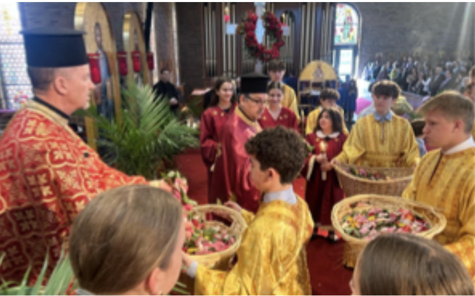

Not sure what to expect? Here is what to wear, what happens during the service, and how to find us — written by people who remember being new too.

Whoever you are, whatever brought you here today, you do not need to know anything or do anything to belong. We are glad you are here.
— Fr. Rick, Saints Peter & Paul
Here is the shape of the morning, start to finish.
Come anytime between 8:15 and 9:30. Parking is free in the lot, and someone near the door will be glad to point you in.
Morning prayers begin at 8:15. Feel free to arrive partway through — many parishioners do.
Our main service begins at 9:30. Stand, sit, or simply take it in — there is no expectation either way.
After the service, join us downstairs for coffee and conversation. This is the easiest place to say hello.
Want someone to sit with you and walk you through it? Request a Guide
Orthodox worship engages all the senses — come ready to be present and take part.
Images of Christ and the Saints line the walls, signifying and reminding us of their unseen presence in the house of worship.
A sweet, smoky scent fills the church during parts of the service. It is part of how we worship, not a distraction from it.
Many people light a candle in the Narthex near the entrance, saying a quiet prayer and remembering Christ's words: 'I am the light of the world.' Feel free to light one, no instructions needed.
You will see people cross themselves at different moments to bless and protect themselves. It is personal, and easy to simply observe.
Everything you'll see and hear on Sunday morning comes from a faith that stretches back to the apostles. If you'd like the fuller picture before you visit — or after — here's where to start.
If your question is not here, reach out — we would rather you ask than wonder.
Whether it's a school group, scout troop, or class, we'd love to show you around.
Bringing a school group, class, or organization? We regularly host tours of the church — just let us know when works.
Schedule a TourJoin us this Sunday, or reach out first if you have a question. Either way, we're glad you found us.